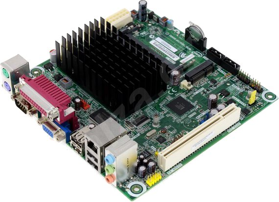
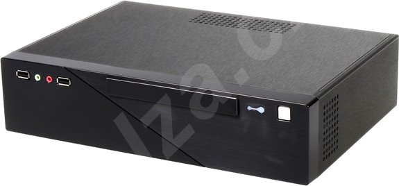
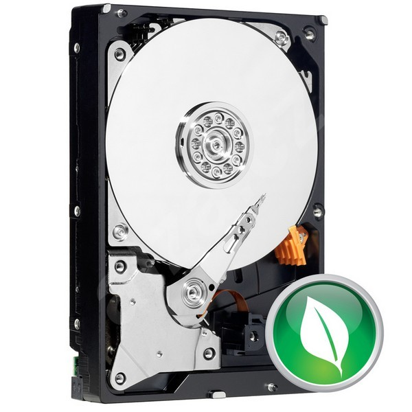
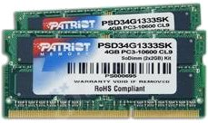

HW serveru je postaven na mini ITX desce Mount Washington se 4GB paměti a 1TB diskem, hozené do mini ITX case se 150W zdrojem. Dále následují stručné popisy s obrázky a odkazy na stránky prodejce a na podrobné popisy na konci stránky. Ty jsem doplnil hlavně pro archivaci - za pár měsíců už živé odkazy nemusí být platné.
Základní deska:
Základní deska INTEL D525MW Mount Washington má integrovaný dvoujádrový procesor Intel Atom D525 s frekvencí 1.8 GHz, grafiku a Gigabitové ethernetové rozhraní. Příkon desky je 13W.

INTEL D525MW Mount Washington
Protože taky HW stárne, připojím projistotu na konec stránky popis který v době prodeje poskytoval server Alza.cz.
Case:
Mini ITX case se 150W zdrojem - co nejmenší, ale zase ne aby se to neuchladilo.

CFI A6819 Slim mini ITX černý
Na konec opět přikládám popis z Alzy (kdyby mi to zrušili).
Harddisk:
WESTERN DIGITAL Caviar Green 1000GB, SATA II, 64MB cache, IntelliPower, 8.9ms, WD10EARS. V době kdy píšu tyhle stránky mi už produkt zrušili - tady je alespoň podobný.

WESTERN DIGITAL Caviar Green 1000GB
A zase kopie popisu od prodejce.
Paměť:
4GB (KIT 2x2GB) SO-DIMM DDR3 1333MHz CL9 PATRIOT Signature Line. Tento produkt je taky zrušený, parametricky mu odpovídá toto. V době kdy jsem to kupoval tam rozhodně nebylo "pro Apple".

4GB (KIT 2x2GB) SO-DIMM DDR3 1333MHz CL9 PATRIOT Signature Line
Pro úplnost kopie popisu.
Intel D525MW Mount Washington
Vysoce kompaktní základní deska v provedení mini ITX kompatibilní s mikro ATX poskytující vynikající řešení pro rozměrově minimalistické a energeticky náročné počítačové sestavy. Na desce je integrován dvoujádrový procesor Intel Atom D525 s frekvencí 1,8 GHz pro činnost každého jádra. Procesor byl vyroben 45nm technologií za účelem dostatečného výkonu pro kancelářské aplikace a multimediální aplikace při extrémně nízké spotřebě, která má hodnotu pouze 13 W! Proto je možné tuto základní desku považovat i za ideální platformu pro vytvoření domácího serveru. Zajímavým rysem procesoru je podpora 64bitových instrukcí a především integrace grafického čipu Intel GMA 3150 přímo do těla procesoru, což má za následek zlepšení výkonu oproti běžné infrastruktuře, kdy je grafický čip implementován do severního můstku čipové sady. Přímo v procesoru se nachází i paměťový řadič DIMM, který umožňuje zapojení dvou paměťových modulů DDR3 pracujících na 800 MHz o maximální celkové kapacitě 4 GB v zapojení Single Channel.
S procesorem přes inovativní DMI sběrnici komunikuje čipová sada NM10 s novou specifikací integrovaného zvuku Intel High Definition Audio. Tento zvukový podsystém spolu s integrovaným kodekem Realtek ALC662 poskytne multistreaming v prostorové konfiguraci 5.1. Z jednoho počítače si tak ve svém pokoji můžete dopřávat audio efekty při hraní her, zatímco ve vedlejší místnosti se bude rozléhat hudba z CD či DVD disku. Čipová sada se rovněž stará o připojení SATA II optických mechanik a pevných disků. Rozšíření o Wi-Fi kartu či TV tuner nabídne PCI Express x1 mini slot a klasický PCI slot, připojení periférií pak čtveřice USB 2.0 portů. Začlenění počítače do místní sítě a k připojení k internetu si vezme na starost LAN čip s gigabitovou rychlostí přenosu dat. Připojení monitoru zajistí analogový výstup grafického čipu D-sub
Parametry a specifikace:
Integrovaný procesor: Model: Intel Atom D525 (Pineview) Počet jader: 2 Počet threadů: 4 Frekvence: 1,8 GHz L2 Cache: 1 MB Sběrnice: DMI TDP: 13 W (max.) Výrobní technologie: 45 nm Architektura: Intel 64
Audio: Intel High Definition Audio Kodek Realtek ALC662 5.1
LAN: Realtek 8111E 10/100/1000 Mbit/s
Rozšiřující sloty: 1x PCI Express Mini 1x PCI
Vnitřní rozhraní: 2x SATA II (3 Gbit/s) 2x USB 2.0 header (pro 4 další USB 2.0 porty) 1x COM header
Vnější rozhraní: 1x PS/2 pro klávesnici 1x PS/2 pro myš 1x paralelní port 1x sériový port 1x D-Sub 4x USB 2.0 1x RJ-45 3x audio jack: vstup / výstup / mikrofon
Provedení: mini ITX
Rozměry: 17 x 17 cm
CFI A6819 Slim 150W černá
Jednoduše elegantní a kompaktní počítačová skříň formátu Mini-ITX vhodná jako základ pro prostorově nenáročný počítač do kanceláří i jako multimediální centrum domácnosti. Skříň poskytuje ideální řešení pro nenáročné uživatele na výkon celé sestavy. Obsahuje zdroj o výkonu 150 W a jeden ventilátor velikosti 40x40 mm. Na přední panel skříně jsou prakticky vyvedeny 2 USB porty a HD audio konektory.
Parametry a specifikace:
Barva: Černá
Formát: Mini-ITX
Chlazení: Ventilátor: 40 x 40 mm
Pozice: 1x 5,25" externí SLIM 1x 3,5" interní
Výstupy na přední panel: 2 x USB 2.0 HD Audio
Zdroj: 150 W
Rozměry: 225 x 315 x 75 mm
Hmotnost: 2,2 kg
Western Digital Caviar Green 1000GB 64MB cache
Pevný disk s kapacitou 1,0 TB z energeticky šetrné série Caviar Green, která tímto také slibuje menší tepelné vyzařování a tedy delší životnost. Klíčem k tak vysoké kapacitě je použití kolmého zápisu. Technologie kolmého zápisu umožňuje uložení dat kolmo na plotnu disku, datový záznam je tak hustší a kapacita několikanásobně vyšší oproti staršímu podélnému zápisu. Vynikající výkon dále podpoří 64 MB paměti cache, což je dvojnásobné množství oproti běžným pevným diskům. Díky své nízké spotřebě i vydávanému hluku je disk vhodný pro multimediální počítače, HTPC, domácí servery či k použití v externích boxech.
Známka Green Power značí převratnou technologii pevných disků, která snižuje provozní spotřebu, vyzařované teplo a hluk. Zajišťují ji úsporné funkce IntelliPower, IntelliPark a IntelliSeek. První z nich synchronizuje otáčky diskových ploten, přenosovou rychlost a cachování tak, aby disk omezil spotřebu a zároveň podával optimální výkon. IntelliPark automaticky parkuje hlavičky disku pro snížení aerodynamického odporu. IntelliSeek propočítává optimální souhru hlaviček a ploten pro co nejlepší poměr mezi výkonem, hlučností a spotřebou. Tyto funkce šetří výdrž disku i životní prostředí.
Parametry a specifikace:
Typ disku: Kolmý zápis na plotnu (perpendicular magnetic recording)
Kapacita: 1000 GB
Rychlost otáčení: 5400 - 7200 RPM (IntelliPower)
Vyrovnávací paměť: 64 MB
Rozhraní: Serial ATA II
Přenosová rychlost: Až 3 Gb/s
Hluk: Seek: 29 dBA Idle: 24 dBA
Spotřeba: Čtení, zápis: 7,4 W Nečinnost: 3,7 W Spánek: 1,1 W
Rozměry: 101,6 x 147 x 25,4 mm
Hmotnost: 730 gramů
Patriot SO-DIMM 4GB (2x2GB KIT) DDR3 1333MHz CL9 Signature Line
Velmi rychlý vysokokapacitní kit paměťových modulů značky Patriot a typu DDR3 s 204pinovým rozhraním, takže poslouží pro zvýšení výkonu notebooků při multitaskingu či náročných úlohách. Tyto paměťové moduly poskytnou kapacitu 4 GB a jsou speciálně určeny zejména pro notebooky Apple iMac. Moduly jsou výjimečné i dvojitou adresací oblastí tzv. Dual Rankem. Oproti pamětem typu DDR2 má ještě více sníženou spotřebu, větší datovou propustnost a lze je taktovat na vyšší frekvence, čímž se rapidně zvýší jejich výkon.